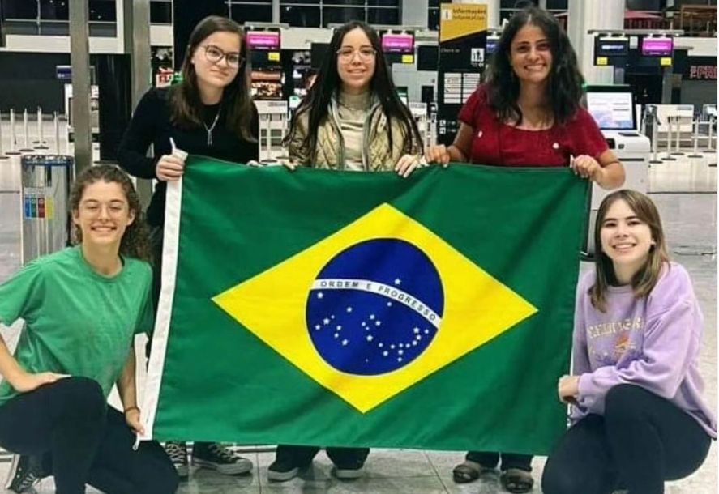
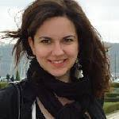
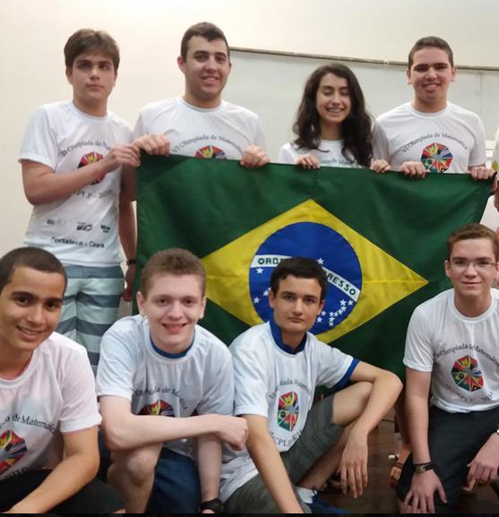
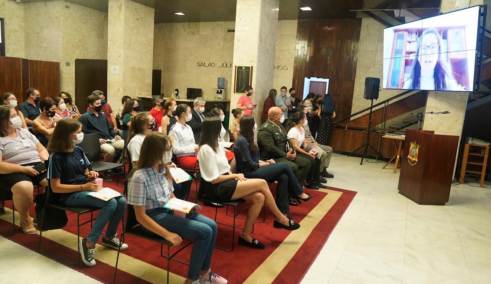
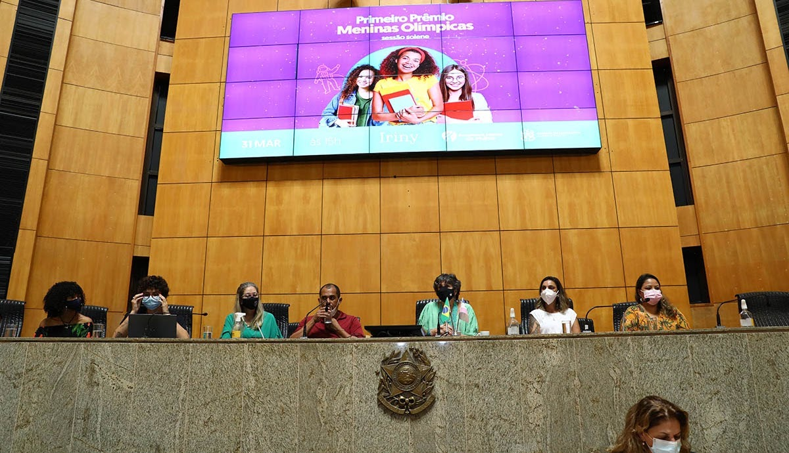
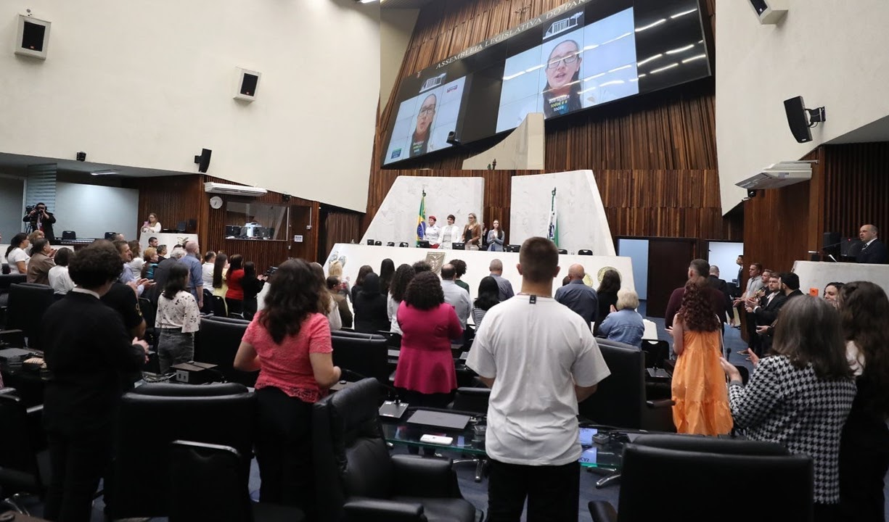

incentivando meninas em olimpíadas científicas
Histórico e atuação
Movimento Meninas Olímpicas
Uma trajetória construída a partir da observação de desigualdades, da criação de oportunidades e do incentivo permanente à participação feminina em olimpíadas científicas.
33 estudantes e apenas uma menina
redução da inscrição e presença de professoras
Histórico
O começo do Movimento Meninas Olímpicas
2015
Início
Uma menina entre 33 estudantes
O Movimento Meninas Olímpicas foi fundado em 2016 devido a um treinamento realizado em 2015 para olimpíadas internacionais de Matemática, no qual havia 33 estudantes e apenas uma menina.
2016
Grande descoberta
A desigualdade também aparecia nas Semanas Olímpicas
Em 2016, participamos como professora em duas Semanas Olímpicas: a da OBM, na Matemática, e a da OBI, na Informática. Nesses eventos, percebemos que as meninas representavam apenas 5% das participantes e que não havia professoras mulheres ministrando cursos.
As Semanas Olímpicas são eventos realizados durante uma semana, voltados ao estudo aprofundado das áreas e destinados a estudantes com os melhores desempenhos nas olimpíadas nacionais.
As meninas presentes nessas atividades começaram, em 2019, diferentes ações de incentivo. A estudante convidada a dar aula na Semana Olímpica da OBM de 2016 organizou o Torneio Meninas na Matemática em 2019. Duas participantes da mesma semana fundaram, naquele ano, o Projeto Sem Parar, em que meninas treinam meninas.
Prêmio Meninas Olímpicas
O reconhecimento posteriormente passou a se chamar Maryam Mirzakhani Award, na IMO 2018.
Troféu Meninas Olímpicas
Um dos primeiros reconhecimentos nacionais associados às ações de incentivo do Movimento.
Semanas Olímpicas
Comparação entre 2016 e 2022
As imagens mostram o crescimento da participação feminina nas Semanas Olímpicas da OBI e da OBM.
OBI
Semana Olímpica de Informática

Semana Olímpica OBI 2016semana-obi-2016.jpg

Semana Olímpica OBI 2022semana-obi-2022.jpg
OBM
Semana Olímpica de Matemática

Semana Olímpica OBM 2016semana-obm-2016.jpg

Semana Olímpica OBM 2022semana-obm-2022.jpg
2016
As primeiras ações
Inscrição reduzida na OBI
Na Semana Olímpica da OBI, as meninas passaram a pagar 50% do valor da inscrição.
Professoras convidadas na OBM
A coordenação da OBM assumiu o compromisso de convidar mulheres para ministrar cursos em todas as edições das Semanas Olímpicas.
Participação do Brasil na EGMO
Em 2016, houve negociação com a coordenação da OBM para garantir a participação brasileira na European Girls' Mathematical Olympiad em 2017.

Olimpíada Paulista de Matemáticaopm-primeiro-premio.jpg
2016 · primeiro Prêmio Meninas Olímpicas
A Olimpíada Paulista de Matemática abriu o caminho
Desde 2016, um total de 12 olimpíadas brasileiras criou prêmios especiais para meninas, além da Olimpíada Internacional de Matemática, em 2017.
O primeiro prêmio foi criado pela Olimpíada Paulista de Matemática. Na primeira edição, a vencedora foi a segunda medalhista de prata. Na quarta edição, a vencedora conquistou a primeira medalha de ouro.
“Eu vi a foto da menina no ano passado e pensei: se ela consegue, eu também consigo.”
Sonhamos apenas sonhos que conhecemos.
Ações desde 2016
Incentivo, divulgação e criação de oportunidades
O Movimento Meninas Olímpicas atua em diferentes frentes para ampliar a presença feminina nas olimpíadas científicas.
Comunicação nas redes
Divulgação e incentivo à participação feminina por meio do Instagram, Facebook, YouTube, TikTok e LinkedIn.
Proposição de prêmios
Criação e proposição de prêmios especiais para meninas em olimpíadas científicas.
Torneios femininos
Criação do Torneio Feminino de Computação em 2020 e do Torneio de Física para Meninas em 2023.
Homenagens às medalhistas
Desde 2016, a Procuradoria Especial da Mulher da Assembleia Legislativa do Rio Grande do Sul homenageia, em parceria com o Movimento, as meninas medalhistas de ouro do estado.
Meninas premiadas
Física, Matemática, Química, Biologia e Saúde

Meninas premiadasmeninas-premiadas-1.jpg

Meninas premiadasmeninas-premiadas-2.jpg

Meninas premiadasmeninas-premiadas-3.jpg

Meninas premiadasmeninas-premiadas-4.jpg
Prêmio Meninas Olímpicas nas Assembleias Legislativas
Reconhecimento por meio de projetos de lei
Desde 2019, Assembleias Legislativas de estados como Rio Grande do Sul, Paraná, Amazonas, Espírito Santo e Mato Grosso do Sul criaram o Prêmio Meninas Olímpicas.

Rio Grande do Sulpremiacao-rs-2022.jpg
2022
Rio Grande do Sul

Espírito Santopremiacao-es-2022.jpg
2022
Espírito Santo

Paranápremiacao-pr-2023.jpg
2023
Paraná
Criação de torneios femininos
Competições criadas para ampliar a participação


Meninas olímpicas de hoje serão as mulheres nos espaços de poder amanhã.
Desde 2016 incentivando as meninas olímpicas.